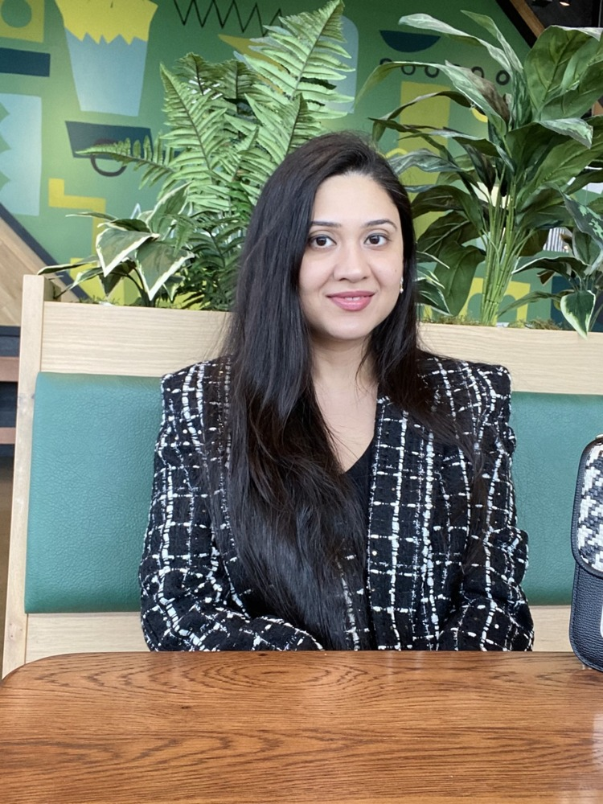

Frontend Developer • AEM • JavaScript • Responsive UI
Building accessible, production-ready web experiences for real users.
I am a Frontend Developer with hands-on experience building responsive healthcare, HCP, and patient-facing digital experiences using HTML, CSS/SCSS, JavaScript, TypeScript, reusable UI patterns, and Adobe Experience Manager.

Frontend + Delivery Mindset
Strong focus on clean UI, accessibility, cross-functional collaboration, QA/UAT, launch readiness, and maintainable code.
Featured Work
Combined project showcase
These are the actual projects from the uploaded files, now connected under one main portfolio landing page.

Main Landing Page
Professional Portfolio
Resume-focused portfolio landing page highlighting frontend skills, AEM delivery, accessibility, responsive UI, and reusable component thinking.
Open Portfolio
Static Multi-page Site
Tea Station
Multi-page brand website using semantic HTML, custom CSS, animations, image cards, side navigation, and product sections.
Open Tea Station
Responsive Landing Page
Backroads
Travel website with responsive navigation, hero section, services, tour cards, gallery, and smooth-scroll interactions.
Open BackroadsSkills
Frontend skills recruiters can quickly scan
Core Frontend
HTML5, CSS3, SCSS, JavaScript, TypeScript, responsive layouts, reusable UI patterns.
AEM + Content
Adobe Experience Manager, content authoring support, digital assets, component-driven pages.
Accessibility + UX
Semantic markup, keyboard-friendly controls, focus states, usability, SEO, and Siteimprove awareness.
Agile Delivery
Azure DevOps, GitHub, sprint support, QA/UAT, defect resolution, production release readiness.
Component Lab
Reusable UI sections prepared for a future React version.
I added a dedicated page to showcase common website components: primary navigation, secondary navigation, banner, cards, accordion, table, footer, and CTA blocks.